9 Years Later:
Grids Documenting
a Trip Back Home
A Digital Scrapbook
Of India
12/2021 - 01/2022
Shravani Bagawde for
Core 2: Interaction Lab
02/25/2022
Thane, Maharashtra, India
19.2183° N, 72.9781° E
City #1
12.20.21
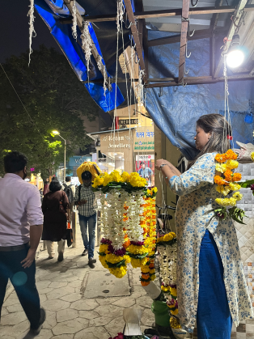
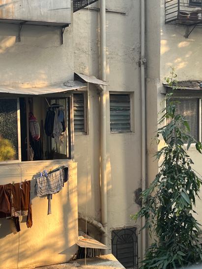
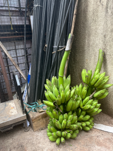
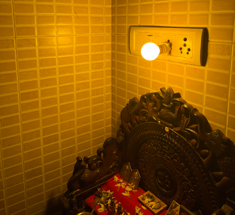
Going back to Thane felt like I was a baby once again. This is my birthplace, and the home of my extended family. I met baby cousins I had only ever seen through a computer screen and grandparents that had last met me as a 10 year old girl. Thane was warm, always sunny and just constantly loud. The day began with the sounds of crows and koels, and ended with the incessant beeping of rickshaws taking commuters back home.
Pune, Maharashtra, India
18.5204° N, 73.8567° E
City #2
01.03.22
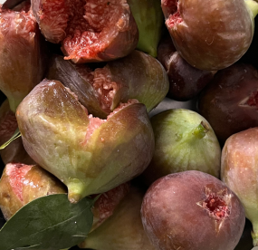
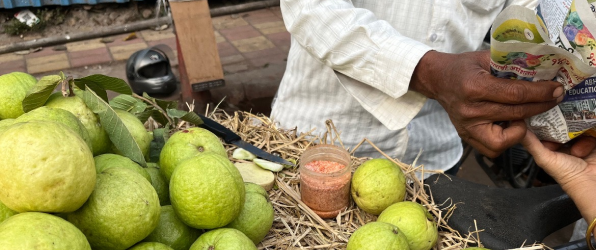
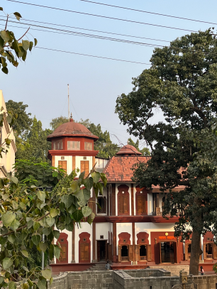
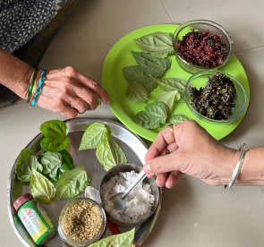
Living in Pune was like a tight hug. This is my second home, and a place that I didn’t necessary hail from but still built my identity. I ate fruits that I had almost forgotten the tastes of, and enjoyed food I knew I wouldn’t ever experience one ocean over. Pune was mellow in the mornings, but bustling by nighttime. Every bungalow I drove by, every banyan tree I saw, was etched in a history dating back thousands of years.
Velhe, Maharashtra, India
18.2963° N, 73.6374° E
City #3
01.16.22
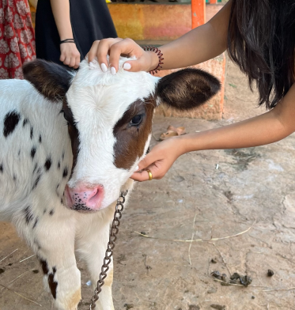
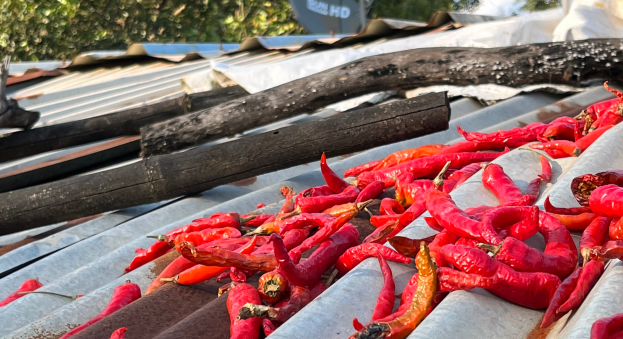
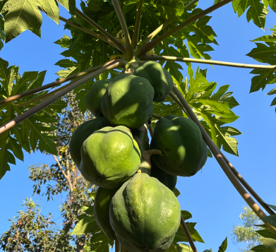
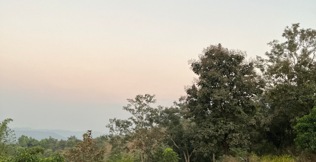
Visiting Velhe felt like someone pushing me on a swing. This wasn’t a home, but rather a retreat within a retreat. I walked through sugarcane farms and slept on jute beds that reminded me of the lifestyle I felt like I was intended to always live. Velhe was cool in the mornings and even cooler at night. Every corner I explored, I could smell the earthy manure used to coat walls and the fragrance of jasmine vines creeping across surfaces.